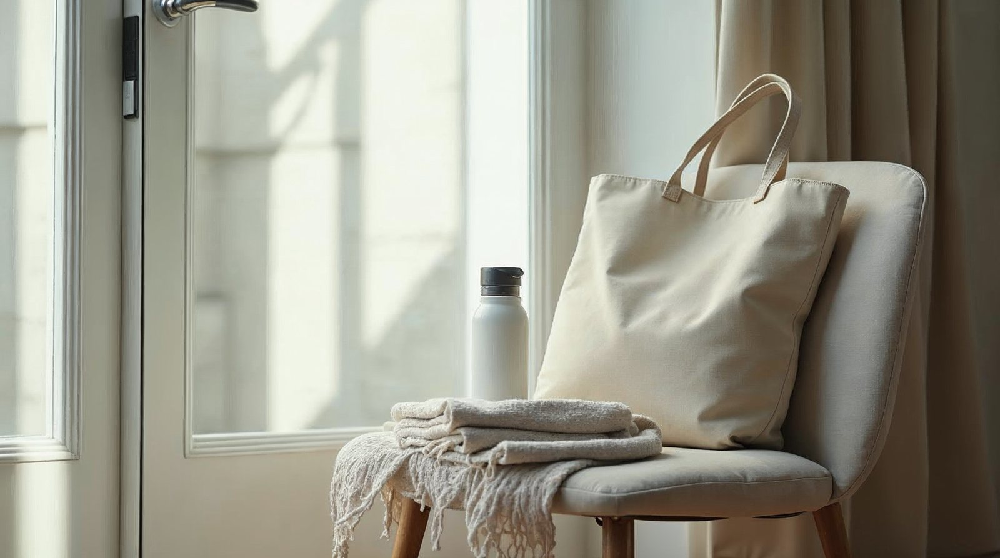
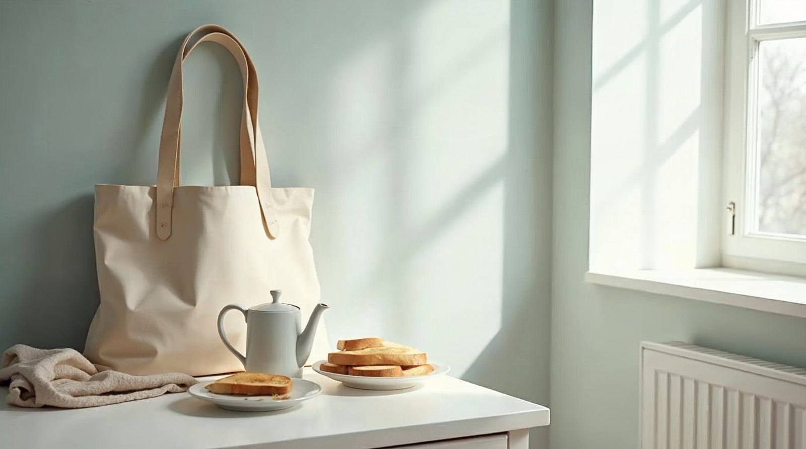
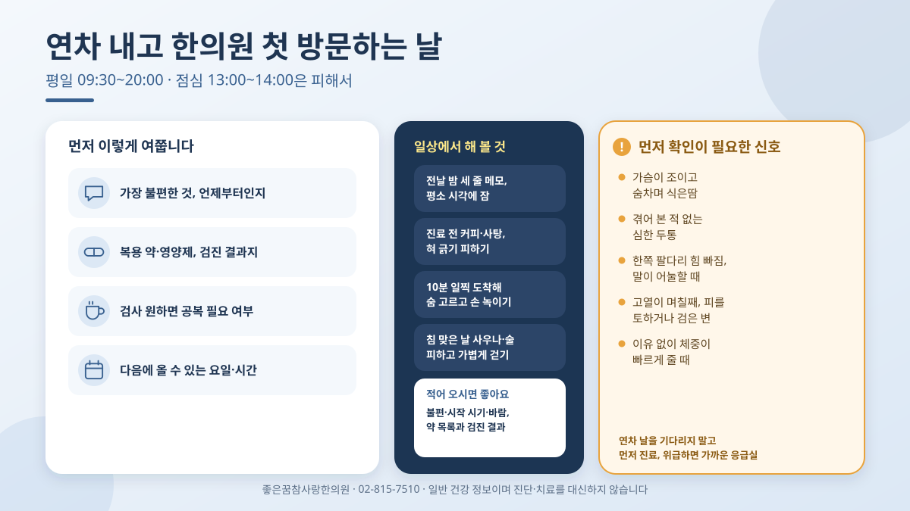

이종호 한의사 감수좋은꿈참사랑한의원 대표원장 (한의사 면허번호 19769)발행 2026-11-28 · 수정 2026-11-28
이 글의 차례
12월이 되면 '올해 남은 연차를 써야 하는데, 이참에 미뤄 둔 한의원 진료를 받아 볼까' 하시는 분이 많습니다. 연차를 낸 평일이라면 좋은꿈참사랑한의원의 평일 진료시간(09:30~20:00, 점심시간 13:00~14:00) 안에서 편한 때를 고를 수 있는데, 하루를 여유 있게 쓰려면 오전 진료 시작에 맞춰 일찍 오시는 편이 좋습니다.
다만 쉬는 날이라고 은행 일, 장보기, 저녁 모임까지 한꺼번에 몰아 넣으면 진료가 쫓기듯 지나가기 쉽습니다. 전날 저녁에 할 이야기와 챙길 것을 정리하고, 진료 전 식사와 커피, 검사를 받을지 여부, 진료 뒤 오후를 어떻게 보낼지까지 미리 정해 두면 첫 방문에서 내 몸 이야기를 충분히 나누고 그날부터 생활에서 해 볼 것을 바로 시작할 수 있습니다.
다만 연차 날을 기다리기 어려운 가슴 통증, 갑작스러운 심한 두통, 한쪽 팔다리 힘 빠짐 같은 증상이 있다면 날짜를 기다리지 말고 먼저 진료를 받으셔야 합니다.
왜 연차를 낸 날의 첫 방문은 하루 계획이 필요할까요
- 첫 방문은 문진표 작성, 지금 불편과 지난 경과에 대한 문진, 진맥, 필요하면 검사와 치료, 앞으로의 안내까지 이어지기 때문에 다시 오실 때보다 시간이 더 걸릴 수 있습니다. 대략 얼마나 걸릴지는 날마다 다를 수 있어 방문 전 전화로 확인해 주세요.
- 연차 날은 평소보다 늦잠을 자거나 아침을 거르고, 점심을 늦게 몰아 먹기 쉽습니다. 이런 날은 맥과 몸 상태가 평소와 달라, 내 몸의 평소 모습을 이야기하기 어려울 수 있습니다.
- 인바디 770이나 혈액 검사, 당화혈색소 검사를 함께 받고 싶다면 식사 시각과 운동, 목욕이 결과에 영향을 줄 수 있어 아침 식사를 언제 할지부터 정해야 합니다.
- 침 치료를 받은 날에는 무리한 운동이나 사우나, 과음을 피하는 편이 무난합니다. 오후에 헬스장이나 찜질방, 저녁 송년회를 잡아 두었다면 순서를 다시 생각해 보는 것이 좋습니다.
- 연말에는 연차를 쓰는 분이 많고, 성탄절처럼 공휴일이 낀 주에는 대기가 길어질 수 있습니다. 원하는 시간대가 있다면 미리 예약해 두는 편이 마음이 편합니다.
- 한의원에서는 아픈 곳만이 아니라 잠, 소화, 대소변, 손발의 온기, 마음 상태처럼 몸 전체의 리듬을 함께 여쭙습니다. 미리 조금 정리해 두면 진료실에서 떠올리느라 애쓰는 시간이 줄어듭니다.
- 쉬는 날에 진료를 받으면 진료실에서 들은 생활 이야기를 그날 오후와 저녁에 바로 시작해 볼 수 있습니다. 바쁜 출근일에는 놓치기 쉬운 부분입니다.
먼저 이렇게 여쭙니다
- 이번에 가장 먼저 상담하고 싶은 불편은 무엇이고, 언제부터 있었는지 여쭙니다.
- 그 불편이 하루 중 언제, 어떤 자세나 상황에서 심해지는지 여쭙니다.
- 함께 있는 불편, 예를 들어 잠이 얕은지, 소화가 더딘지, 손발이 찬지, 생리 주기가 흐트러졌는지 여쭙니다.
- 이미 받은 검사나 건강검진 결과, 복용 중인 약과 영양제를 여쭙니다.
- 한의원 진료를 받아 본 적이 있는지, 침이나 한약에 대해 걱정되는 점이 있는지 여쭙니다.
- 임신 가능성이 있는지, 혈액을 묽게 하는 약을 드시는지처럼 진료 전에 꼭 알아야 할 점을 여쭙니다.
- 첫 방문 이후 다시 오실 수 있는 요일과 시간대를 여쭙니다.

일상에서 먼저 해 볼 수 있는 것
연차 날짜와 시간 고르기
- 평일 연차라면 오전 9시 30분 진료 시작에 맞춰 오시는 것이 하루를 가장 여유 있게 쓰는 방법입니다. 오후로 잡는다면 점심시간(13:00~14:00)을 피해 오후 2시 이후로 정합니다.
- 연말 모임이 있는 날 바로 다음 날은 첫 방문 날로 피해 보셔도 좋습니다. 술과 늦은 귀가로 잠이 짧았던 다음 날은 몸 상태가 평소와 다를 수 있습니다.
- 성탄절처럼 공휴일에 오신다면 공휴일 진료시간(09:30~15:00, 점심시간 없음)이 적용됩니다. 연휴 기간의 진료 여부와 대기 상황은 방문 전 전화로 한 번 더 확인해 주세요.
- 날짜를 정하면 네이버 예약이나 전화(02-815-7510)로 예약하면서 "처음 방문합니다"라고 알려 주세요. 검사를 함께 받고 싶다면 그때 공복이 필요한지, 무엇을 준비하면 되는지 함께 여쭤보시면 좋습니다.
전날 저녁에 할 일
- 메모를 세 줄로 적습니다. 첫째 줄은 가장 불편한 것, 둘째 줄은 언제부터 어떤 때 심해지는지, 셋째 줄은 진료로 가장 바라는 것입니다.
- 복용 중인 약과 영양제는 이름이 보이게 사진을 찍어 두거나 목록으로 적습니다. 건강검진 결과지나 다른 병원 검사지가 있다면 함께 챙깁니다.
- 저녁은 평소 시각에 평소 양으로 먹고, 술은 쉬어 갑니다.
- 연차 전날이라고 새벽까지 영상을 보기보다 평소 출근일과 비슷한 시각에 잠자리에 듭니다.
- 다음 날 입을 옷은 소매를 팔꿈치 위로 걷기 쉽고, 바지를 무릎 위로 올리기 편한 것으로 골라 둡니다. 진맥과 침 치료가 수월해집니다.
진료 당일 아침
- 평소 출근할 때와 비슷한 시각에 일어납니다. 몸의 리듬이 평소와 비슷할 때 진료에서 나누는 이야기도 평소 모습에 가까워집니다.
- 혀를 칫솔로 세게 긁지 않고, 색이 진한 음료나 사탕은 진료 전에 피합니다. 혀의 색과 설태를 살피는 데 영향을 줄 수 있습니다.
- 커피는 진료 직전에 마시지 않고, 꼭 마신다면 한두 시간 전에 연하게 한 잔만 마십니다.
- 혈액 검사에 공복이 필요하다고 안내받았다면 그에 따르고, 그렇지 않다면 가볍게 아침을 먹습니다. 인바디는 식사 직후보다 식전이나 식후 두 시간쯤 지나서, 화장실에 다녀온 뒤 재는 편이 좋습니다.
- 예약 시각보다 10분쯤 일찍 도착하도록 나섭니다. 상도역 3번 출구로 나와 약 200m 직진한 뒤 오거리에서 우회전해 약 200m 오시면 되고, 노량진역(1·9호선) 3번 출구에서는 마을버스 동작01을 타고 신동아리버파크에서 내리시면 됩니다.
도착해서 진료 전까지
- 문진표를 쓴 뒤 5분쯤 앉아 숨을 고릅니다. 걸어오거나 계단을 오른 직후에는 맥이 빨라져 있을 수 있습니다.
- 겉옷을 벗고 손을 녹이며, 전날 적은 메모를 꺼내 둡니다.
진료 뒤 오후
- 침 치료를 받았다면 그날은 땀을 많이 흘리는 운동, 사우나, 과음은 피하는 편이 무난합니다. 샤워나 목욕은 진료 때 안내받은 대로 합니다.
- 점심은 따뜻하고 소화가 잘되는 음식으로 천천히 먹습니다.
- 오후에는 30분 정도 가볍게 걷거나, 낮잠을 자더라도 20~30분 안으로 짧게 잡니다. 낮잠이 길어지면 그날 밤잠이 늦어질 수 있습니다.
- 진료실에서 들은 설명을 세 줄로 정리합니다. 지금 몸 상태에 대한 설명, 생활에서 바꿔 볼 것, 다음 방문 시기입니다.
- 다음 방문 날짜를 그 자리에서 달력에 적습니다. 연말 일정 속에서 평일 저녁이나 주말 오전 가운데 가능한 날을 골라 두면 흐름이 끊기지 않습니다.
그날 저녁
- 진료 때 들은 생활 이야기 가운데 하나를 그날 바로 시작합니다. 예를 들어 잠자리에 드는 시각을 정하거나, 저녁을 일찍 마치는 것처럼 작은 것부터 합니다.
- 진료 뒤 몸이 노곤했는지, 침 맞은 자리가 뻐근했는지, 밤잠은 어땠는지 짧게 적어 둡니다. 다음 진료 때 이어서 이야기하기 좋습니다.

상황별 예시
- 예를 들어 12월 중순 평일에 연차를 내고 오전 9시 30분에 맞춰 오시는 직장인이 인바디와 혈액 검사도 함께 받고 싶은 경우, 예약할 때 공복이 필요한지 먼저 확인하고, 검사를 먼저 받은 뒤 아침을 드시는 순서로 계획해 볼 수 있습니다. 진료 뒤 오후는 운동 약속 없이 비워 두면 좋습니다.
- 예를 들어 연차 대신 오후 반차를 쓰는 경우, 오전 업무를 마치고 바로 오시면 점심시간과 겹칠 수 있습니다. 점심을 먼저 드시고 오후 2시 이후로 예약하거나, 아예 퇴근 무렵 저녁 진료 시간으로 잡는 방법도 있습니다. 접수 가능 시각은 방문 전 전화로 확인해 주세요.
- 예를 들어 송년회 다음 날을 연차로 잡아 두었는데 전날 늦게까지 술을 마신 경우, 가능하면 날짜를 옮기시고, 옮기기 어렵다면 진료실에서 전날 일을 그대로 말씀해 주세요. 맥과 몸 상태를 해석할 때 함께 고려합니다.
- 예를 들어 성탄절 공휴일에 가족과 함께 오려는 경우, 공휴일 진료시간이 09:30~15:00이고 점심시간이 없다는 점을 기억해 오전에 오시는 편이 여유 있습니다. 여러 명이 함께 오신다면 예약할 때 인원을 미리 알려 주세요.
자주 하는 오해
- 연차라서 오후 아무 때나 가면 된다고 생각하기 쉽지만, 평일에는 점심시간(13:00~14:00)이 있고 접수 가능 시각도 날마다 다를 수 있어 미리 확인하는 편이 좋습니다.
- 첫 방문은 금방 끝난다고 여기는 분도 있습니다. 처음에는 지난 경과와 몸 전체의 리듬을 여쭙는 시간이 필요해, 뒤에 일정을 바짝 붙여 두면 마음이 급해질 수 있습니다.
- 검사는 언제 받아도 결과가 같다고 생각하기 쉽지만, 식사와 운동, 목욕 직후에는 결과가 달라질 수 있습니다.
- 한 번 가면 계속 다녀야 한다는 부담을 느끼는 분도 있습니다. 첫 방문은 지금 상태를 함께 살피고 앞으로의 순서를 정하는 자리이고, 그 뒤 일정은 상담하면서 정할 수 있습니다.
- 불편이 여러 가지면 하나만 골라 와야 한다고 여기는 분도 있습니다. 여러 가지를 함께 말씀하셔도 되고, 가장 먼저 다루고 싶은 것을 알려 주시면 순서를 정하기 쉽습니다.
스스로 점검해 보세요
- 연차 날짜를 연말 모임 다음 날과 겹치지 않게 골랐다.
- 예약하면서 처음 방문이라고 알리고, 검사 준비를 물어보았다.
- 가장 불편한 것, 언제부터인지, 바라는 것을 세 줄로 적었다.
- 복용 중인 약과 영양제 목록, 검진 결과지를 챙겼다.
- 소매와 바지를 걷기 편한 옷을 골라 두었다.
- 진료 뒤 오후에 땀 빼는 운동이나 사우나, 술자리를 잡지 않았다.
- 다음 방문이 가능한 요일과 시간대를 생각해 두었다.
한의원에서 함께 살필 수 있는 경우
- 한 해 동안 어깨, 허리, 무릎처럼 '참을 만해서' 미뤄 둔 불편이 있는 경우
- 연말 건강검진 결과지를 받고 생활을 어떻게 정리할지 상의하고 싶은 경우
- 연말 업무와 모임으로 잠과 소화 리듬이 흐트러지고 피로가 쌓인 경우
- 딱 집어 말할 병은 없지만 몸 전체 상태를 한번 살펴보고 싶은 경우
좋은꿈참사랑한의원에서는 첫 방문 때 문진표를 바탕으로 가장 불편한 점과 지난 경과, 이미 받은 검사와 복용 중인 약을 먼저 여쭙고 맥부터 짚어 봅니다. 진맥과 함께 혀를 살피고, 필요하면 아픈 부위를 직접 눌러 보거나 움직여 보며 상태를 확인합니다. 원하시거나 필요하다고 판단되면 인바디 770, 혈액 검사기, 당화혈색소 검사기, 초음파로 확인하기도 합니다.
그 뒤 지금 상태에 대한 설명과 함께 침, 추나, 한약, 생활 조정 가운데 무엇부터 할지 순서를 함께 정하고, 다른 병원 진료가 먼저라고 판단되면 그렇게 안내해 드립니다. 다음에 오시면 첫날 나눈 이야기에서 이어서, 그사이 몸과 생활이 어땠는지를 여쭙습니다.
얼마나 지켜보고 언제 상담할까요
- 첫 진료 뒤 하루 이틀은 몸의 느낌과 잠, 소화가 어땠는지 짧게 적어 둡니다.
- 다음 방문 간격은 진료 때 상태와 일정을 함께 놓고 상의해 정합니다. 연말 일정이 빠듯하다면 그 사정을 미리 말씀해 주세요.
- 진료 뒤 불편이 전과 다르게 느껴지거나 궁금한 점이 생기면 다음 방문을 기다리지 말고 전화로 알려 주세요.
- 연차 날까지 기다리기 어려울 만큼 불편이 심해진다면 날짜를 앞당겨 평일 저녁이나 주말 진료를 이용하셔도 됩니다.
이렇게 기록해 오시면 상담이 쉬워집니다
- 가장 불편한 것, 언제부터인지, 진료로 바라는 것을 적은 세 줄 메모
- 불편이 심해지는 시간대와 자세, 상황
- 요즘 잠드는 시각과 깨는 시각, 식사 시각과 소화 상태
- 복용 중인 약과 영양제의 이름과 용량
- 건강검진 결과지, 다른 병원 검사지나 진단명
- 앞으로 방문할 수 있는 요일과 시간대
이런 증상은 먼저 확인이 필요합니다
- 가슴이 조이듯 아프거나 숨이 차고 식은땀이 나는 경우
- 겪어 본 적 없는 심한 두통이 갑자기 생긴 경우
이런 신호가 있으면 한의원보다 가까운 병원이나 응급실을 먼저 찾으세요.
관련 글
- 한의원에 처음 가면 어떤 순서로 진료하고 무엇을 준비하나요?
- 인바디·혈액 검사·초음파를 같은 날 받으려면 순서와 준비는 어떻게 하나요?
- 올해 안에 가 보려다 미뤄 둔 한의원 첫 방문, 12월 바쁜 일정 속에서는 어떻게 시간을 잡나요?

여쭙는 것
- 이번에 가장 먼저 상담하고 싶은 불편은 무엇이고, 언제부터 있었는지 여쭙니다.
- 그 불편이 하루 중 언제, 어떤 자세나 상황에서 심해지는지 여쭙니다.
- 함께 있는 불편, 예를 들어 잠이 얕은지, 소화가 더딘지, 손발이 찬지, 생리 주기…
생활에서 해 볼 것
- 평일 연차라면 오전 9시 30분 진료 시작에 맞춰 오시는 것이 하루를 가장 여유 있…
- 연말 모임이 있는 날 바로 다음 날은 첫 방문 날로 피해 보셔도 좋습니다. 술과 늦…
- 성탄절처럼 공휴일에 오신다면 공휴일 진료시간(09:30~15:00, 점심시간 없음)…
한의원에서 함께 살필 것
- 한 해 동안 어깨, 허리, 무릎처럼 '참을 만해서' 미뤄 둔 불편이 있는 경우
- 연말 건강검진 결과지를 받고 생활을 어떻게 정리할지 상의하고 싶은 경우
- 연말 업무와 모임으로 잠과 소화 리듬이 흐트러지고 피로가 쌓인 경우
먼저 확인이 필요한 신호
- 가슴이 조이듯 아프거나 숨이 차고 식은땀이 나는 경우
- 겪어 본 적 없는 심한 두통이 갑자기 생긴 경우
한눈에 보는 표
| 구분 | 핵심 |
|---|---|
| 여쭙는 것 | 이번에 가장 먼저 상담하고 싶은 불편은 무엇이고, 언제부터 있었는지 여쭙니다. 그 불편이 하루 중 언제, 어떤 자세나 상황에서 심해지는지 여쭙니다. |
| 생활에서 해 볼 것 | 평일 연차라면 오전 9시 30분 진료 시작에 맞춰 오시는 것이 하루를 가장 여유 있게 쓰는 방법입니다. 오후로 잡는다면 점심시간(13:00~14:00)을 피해 오후 2시 이후로 정합니다. 연말 모임이 있는 날 바로 다음 날은 첫 방문 날로 피해 보셔도 좋습니다. 술과 늦은 귀가로 잠이 짧았던 다음 날은 몸 상태가 평소와 다를 수 있습니다. |
| 한의원에서 함께 살필 것 | 한 해 동안 어깨, 허리, 무릎처럼 '참을 만해서' 미뤄 둔 불편이 있는 경우 연말 건강검진 결과지를 받고 생활을 어떻게 정리할지 상의하고 싶은 경우 |
| 먼저 확인이 필요한 신호 | 가슴이 조이듯 아프거나 숨이 차고 식은땀이 나는 경우 겪어 본 적 없는 심한 두통이 갑자기 생긴 경우 |
자주 묻는 질문
연차를 낸 날 오전과 오후 중 언제 가는 것이 좋을까요?
하루를 여유 있게 쓰려면 오전 9시 30분 진료 시작에 맞춰 오시는 편이 좋습니다. 오후에 오신다면 점심시간(13:00~14:00)을 피해 2시 이후로 잡고, 접수 가능 시각은 방문 전 전화로 확인해 주세요.
첫 방문은 얼마나 걸리나요?
문진과 진맥, 필요한 검사와 치료, 안내까지 이어져 다시 오실 때보다 시간이 더 걸릴 수 있습니다. 그날의 대기 상황에 따라서도 달라지니 대략의 시간은 예약하실 때 전화로 여쭤봐 주세요.
검사를 받으려면 아침을 굶고 가야 하나요?
받으려는 검사에 따라 다릅니다. 혈액 검사처럼 공복이 필요한지는 예약할 때 확인하시고, 인바디는 식사 직후보다 식전이나 식후 두 시간쯤 지나 재는 편이 좋습니다.
진료를 받은 날 오후에 운동이나 사우나를 해도 되나요?
침 치료를 받은 날에는 땀을 많이 흘리는 운동이나 사우나, 과음은 피하는 편이 무난합니다. 가벼운 걷기 정도는 괜찮은 경우가 많고, 자세한 것은 진료 때 안내받은 대로 하시면 됩니다.
성탄절 같은 공휴일에도 첫 방문이 가능한가요?
토·일·공휴일은 09:30~15:00에 진료하고 점심시간이 없습니다. 다만 연휴 기간의 진료 여부와 대기 상황은 바뀔 수 있어 방문 전 전화로 한 번 더 확인해 주세요.
좋은꿈참사랑한의원은 재진 때 지난번 이야기부터 이어서 여쭙니다. 진료시간과 예약은 오시는 길에서 확인하세요.
어디서 상담받을 수 있나요?
좋은꿈참사랑한의원은 서울 동작구 만양로2길 2 신성빌딩 3층·5층(서울 동작구 상도동, 7호선 상도역 3번 출구 근처)에 있습니다. 한의사 3명(이종호 대표원장, 조영기 수석진료원장, 정원영 진료원장)이 진료합니다. 진료시간은 평일 09:30~20:00(점심 13:00~14:00), 토·일·공휴일 09:30~15:00이며, 방문 전 전화로 확인을 권합니다. 예약은 네이버 예약, 카카오톡 상담, 전화 02-815-7510로 받습니다.
이 글은 일반적인 건강 정보이며 개인의 진단이나 치료를 대신하지 않습니다. 증상이 있거나 복용 중인 약이 있다면 진료를 통해 확인하세요. 치료 효과는 개인마다 다를 수 있습니다.
작성 기준: 일반적으로 알려져 있는 건강 정보를 참고해 정리했습니다(대표원장 감수). 증상 기록은 1~2주 동안 하루 1회, 비슷한 시간에 적어 오시면 지난 상태와 비교하기 쉽습니다.